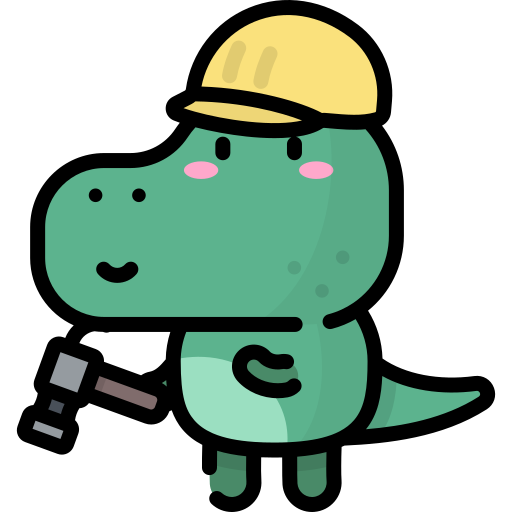

Soy Sol Garaicoechea, Coach Ontológico. A través del DESARROLLO PERSONAL elijo cada día acompañar a otras personas hacia una vida plena en contacto con su interior y sus emociones.
Coaching de vida (LifeCoach)
Desde mi lugar de Coach escucho atentamente, con profundo respeto y amor. No juzgo ni cuestiono, hago preguntas curiosas, a veces desafiantes, para desbloquear creencias limitantes y acompañar así a tomar acciones que nos lleven por el camino del logro de tus sueños. En cada sesión desafiamos la famosa «zona de confort». Observamos juntos aquello que pocas veces suele ser mirado. Es como que ponemos una lupa con luz en lo oculto. Todo proceso es manejado por el cliente: a su propio ritmo, a su manera particular de proceder y con los temas que traiga y desee profundizar. Yo no elijo los temas, yo no doy consejos. El cliente es el protagonista de la sesión. En algunas sesiones te invitaré a hacer ejercicios que colaboren en el proceso o compartiré material útil. Una vez iniciado el proceso el acompañamiento es permanente. No estarás solo!
Aprendé a reformular viejos paradigmas, a soltar creencias que ya no te son útiles y a reconciliarte con todo tal como fue. Trabajemos en conjunto por tus sueños construyendo una nueva mirada para alcanzar tu bienestar.

Sobre Mí
Nací y me crié en plena Ciudad de Buenos Aires. Estudié en la Universidad de Buenos Aires Licenciatura en Administración, ni bien finalicé el colegio secundario. Al mismo tiempo, comencé a trabajar jornada completa y más tarde realicé una Especialización de posgrado en Administración Financiera en el Sector Público Argentino.
Sentía constantemente que, de alguna manera, este enfoque que había elegido para mi vida no llenaba mi alma y me hacía sentir incómoda. Pero yo seguía en la marcha porque creía que era lo que había que hacer, que estaba haciendo simplemente «lo correcto». Las pocas veces que me atrevía a pensar en hacer o estudiar algo diferente, no parecían reales las posibilidades que se me ocurrían… y otras alternativas ni siquiera se me llegaban a ocurrir, sencillamente no podía verlas.
Luego de años de psicoanálisis llegué, por recomendación de mi homeópata, a un proceso de Coaching y de TAO. Esta senda de revisión y desarrollo personal me hizo volver a tomar contacto con mis preguntas de niña y comprender que no las había abandonado definitivamente, permanecían latiendo fuerte en mi corazón, sólo que yo había decidido taparlas. Así fue como me acerqué al Reiki, a las meditaciones y luego a estudiar Coaching Ontológico, Coaching Sistémico y Constelaciones Familiares Cuánticas y encontré en este camino de servicio aquello que tantos años busqué:
¡Mi pasión! ¡Encontré por fin la vocación que hace vibrar y brillar mi alma! Lo que se refleja en cada sesión, taller y capacitación que llevo a cabo por la entrega con la que realizo mi trabajo.
Mi formación
Realicé mi formación de COACHING ONTOLÓGICO PROFESIONAL durante dos años de manera presencial y vivencial en una escuela de mucho prestigio en la Ciudad de Buenos Aires. Mi título está avalado por la Asociación Argentina de Coaches Ontológicos AACOP y acreditado por la Federación Internacional de Coaching Ontologico FICOP. También me formé y estoy certificada en NUEVAS CONSTELACIONES FAMILIARES CUÁNTICAS (otra formación presencial de 2 años sumamente sanadora y hermosa), en COACHING SISTÉMICO, en el Programa Internacional ONU FAMILIAS FUERTES (con experiencia práctica en el asentamiento Villa 31 del barrio de Retiro, en Buenos Aires) y en Disciplina Positiva.
He sido DOCENTE de la formación de Coaching Ontológico Profesional de la Consultora Centro de Desarrollo Humano, en su sede de Belgrano (CABA), participé como colaboradora de Entrenamientos de Vida con Coaching Cuántico. Actualmente dicto cursos y talleres de capacitación para diferentes organismos y empresas, y también para el público en general. Sigo siempre estudiando e incorporando herramientas para ser cada día una mejor Coach, a la vez que cada día me enamoro un poco más de mi profesión.
Nuevo camino
Hoy, con mucho amor y alegría, elijo cada día acompañar a otras personas hacia una vida plena, en contacto permanente con sus emociones y con su interior, con quienes realmente son, creando una nueva mirada posibilitadora, acorde a la vida que deseen vivir, y descubriendo que todos tenemos las herramientas que necesitamos, solo debemos aprender a verlas o dejarnos acompañar para poder descubrirlas. ¡Sé que puedo acompañarte en este camino!
Claro que nada sucede sin tu compromiso.
Mi premisa fundamental es que nadie sabe más que vos sobre tu vida y tu bienestar. Vos tenes todas tus herramientas dentro tuyo. Yo simplemente son un vehículo que te acompaña a verlas, a descubrirlas, vamos hacia donde queres ir, te muestro el camino, te guío, con total amor, compromiso y predisposición. Pero no puedo ir sola.
Necesitamos ir juntos.
Valores
Compromiso
Mi concentración, atención y energía está puesta en lo que mi consultante quiere lograr y en buscar juntos cómo hacerlo.

Amorosidad
Acepto como válido para mi cliente todo lo que me diga, haga, sea o quiera hacer o ser aunque no lo comparta o piense diferente. No soy juez ni parte. Honro en cada momento la relación que juntos creamos y la confianza que él o ella me otorgan al elegirme para abrir su mundo ante mí.

Respeto
Todas mis opiniones las emito con permiso de mi cliente, de manera liviana, teniendo presente que es solamente una opinión mía. Reconozco al otro como legítimo otro dejándolo ser y hacer en su máxima expresión.
Gratitud
Vivo cada momento de la vida en pleno contacto con el agradecimiento por mi vida misma, y así vivencio cada una de mis sesiones o talleres también.
Curiosidad
Quiero ver el mundo como lo ve mi cliente, saliéndome de mi visión propia para aprender nuevas miradas.

Servicio
Estoy el 100% al servicio total de mi cliente, viendo lo que él/ella necesita en cada momento para su crecimiento y voy a hacer lo mejor de mí para acompañarlo.

Pasión
Pongo todo mi corazón al servicio de mi consultante y lo hago con mi más profundo amor, voluntad, gratitud y compromiso.
Empatía
Genero relación, poniéndome en el lugar de mi cliente. Tengo siempre una dulce sonrisa en mi cara, en especial cuando recibo/despido a mis coachees y durante toda la conversación. Me emociona y me moviliza lo que le pase a mi consultante.
¿Qué es el Coaching Ontológico?
Trabajamos con el “estar siendo” del cliente y con su hacer, pretendiendo ampliar sus posibilidades y puntos de vista, incluir aquello que por nuestras creencias y limitaciones dejamos fuera, aquello que por nuestra particular forma de ser y hacer no podemos ver. La idea central es que el consultante se auto-descubra para así poder establecer acciones que lo acerquen a sus sueños y metas. El proceso no tiene una duración establecida rígidamente de ante mano, sino que se adapta al cliente y los temas planteados. De todas formas un promedio aproximado de duración de un proceso individual por ejemplo puede ser entre 8 y 15 sesiones, a veces más, a veces menos.
Para mí el coaching es una forma de vida. Es la disciplina que elijo para trabajar mis sueños y cumplirlos y para acompañar a otras personas a que también lo hagan. No es magia. Se necesita compromiso, voluntad y sobre todo de mucho amor. Requiere vernos a nosotros mismos y a los demás en su máximo potencial, en sus posibilidades totales, vernos como la mejor versión que ya somos pero que aún no pudimos descubrir solos. El coach te muestra lo que ya tenés y no habías visto.
Para conocer más sobre Coaching Ontológico hacé click Aquí
Contratá tus sesiones de coaching
En las sesiones individuales cuantas más sesiones contratás juntas más ahorrás!! Aprovechá los paquetes promocionales.

Sesiones individuales

Círculo de mujeres
Curso virtual "Fortalece tu amor propio"

Taller Online "Mis emociones y yo"
¿Cómo es una sesión?
Son sesiones individuales 1 a 1: Coach y cliente, ambos trabajando juntos para descubrir que todos somos seres únicos, irrepetibles, completos y por sobre todo merecedores de nuestros sueños!! Dentro tuyo están todas las respuestas. Sacaremos a la luz tu ser merecedor y capaz al tiempo que aprenderemos cuales son las acciones necesarias para conectarte con tu mejor versión. Trabajaremos en un espacio privado construyendo confianza mutua.
- Presencial: Barrio de Belgrano R, en el corazón de la Ciudad de Buenos Aires.
- A distancia: Se realizan a través de una computadora o celular conectados a Internet y de preferencia con cámara para vernos. Esta modalidad cuenta con la ventaja de evitar los tiempos y costos de traslado y de superar la limitación de la distancia si estás lejos de la Ciudad.
Beneficios del Coaching a distancia
| Beneficios | Comodidad | Libertad | Economía |
|---|---|---|---|
| Tu hogar | Desde tu casa vas a poder conectar de manera auténtica con un nivel de vulnerabilidad y privacidad inigualable | Organizar nuestras actividades en base a la vida que queremos es clave |
|
Mi Consultorio